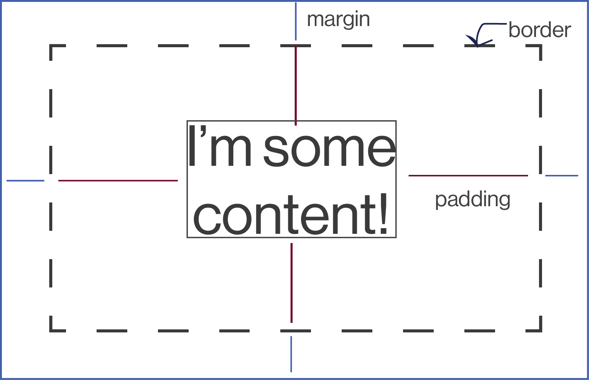

back to index
CSS Concepts: Positioning, Margins, Classes, and more
What does it all mean?
This week, we delved into all the things that make CSS so wonderful and powerful, but also frustrating at times.
To start, let's talk about borders, padding, and margins. Here's a handy diagram to illustrate their relationship:
On a page, the "content" is self-explanatory. Content can be an image, a paragraph, an audio clip, whatever the user is actually interacting with. The area between the content itself and the border of the content is the padding. The border delineates the boundaries of a content's padding. By default, you won't actually see the border around an element unless you target it in CSS (border: 1px solid #ffffff; would place a 1px wide white border around an element). The margin is the space that exists outside of the border, and can separate elements from each other across the page. You can target the padding and margins of an element on all sides equally, or you can target just one side, depending on your goals. For example "margin-left:50px;" would add 50px just to the left of one element. Not too painful!
Classes and ID's are another part of CSS that I've found to be so handy. Let's say, for example, I have two paragraphs on my page. They have the same tag, but I want the type of one of them to be blue, and the other to stay the default black. What to do? This is where classes and id's come in. Classes and id's let you target a specific element on a page to style it differently than other elements of the same tag. But there are some best practices and specifications as to which to use.
Classes
- When you have more than one element on a page that will receive the same (distinct) styling, use a class.
- When you have more than one instance of an element on a page that will receive the same (distinct) styling, for example, three instances of a paragraph that are to be in blue instead of black, use a class.
- Classes can be applied to different elements, as well.
- In a CSS file, classes are targeted with a "." For example, ".toolbar" would target elements with the class of ".toolbar"
- ID's are unique: they should only be used if there will be one instance of a stylistic difference on the page (ie only ONE paragraph will be in blue instead of black)
- Along those same lines, an ID should only be used once per page.
- One element cannot have multiple ID's
- In a CSS file, ID's are targeted with a "#" For example, "#toolbar" would target an element with the ID of "#toolbar"
Positioning is also crucial to creating diverse layouts of a page in CSS. It can be intimidating at first, but I promise, it's not too bad.
position: static- This just designates the default position of an element on a page, without any kind of positioning. When you don't specify a position for an element on a page, it is statically positioned.
position: absolute - When an element is absolutely positioned, it is positioned in relation to the FIRST PARENT ELEMENT it has that does not have a static position. If there is no such parent element, it is positioned in relation to the HTML. For example, if a list inside a paragraph is absolutely positioned, it's positioning will be based on the position of the paragraph, its parent element.
position: relative - A relatively positioned element will sit relative to where it would originally be in its static position. For example, a relatively positioned element with top margin of 50px will sit 50px down the screen from where it would be without that top margin. Understandable, right?
position: fixed - An element with a fixed position will not move. Period. When the page is scrolled through, it will stay in the same exact position no matter what. It is anchored to the browser window.
Now for inline and inline-block styling. Personally, I love when I get the chance to work with inline and inline-block elements. Go ahead and call me a nerd, it doesn't bother me! It's fairly simple: when the display property of an element is set to "inline" that element will not respect any width and height specifications, even if indicated in the CSS. They will also not respect top an bottom margins (only left and right.) They will allow other elements to sit to their left and right. I like to think of elements with a display property of "inline-block" as a little friendlier. They will respect width and height specifications as set forth in your CSS, as well as top and bottom margins. Just as inline elements, they will allow others to sit to their left and right.
And there you have it! I hope this was an informative introduction to some of the more formidable aspects of CSS. These things can be frustrating, but having a solid grasp on them can truly help you elevate your HTML into something visually exciting!